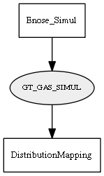

Global overview
All modules
All variables
All commands
Mission files
Pipelines
Variable: GT_GAS_SIMUL
Variable info:
Variable name
Short description
Who publishes it?
Who subscribes to it?
GT_GAS_SIMUL
A temporary file with a binary serialization with the current state of the gas map being simulated (Ground Truth).
Enose_Simul
DistributionMapping
Variable graph:

Detailed description:
A temporary file with a binary serialization with the current state of the gas map being simulated (Ground Truth).
Page generated by
Mooxygen 1.1.0
at Thu Jan 22 11:30:21 2015